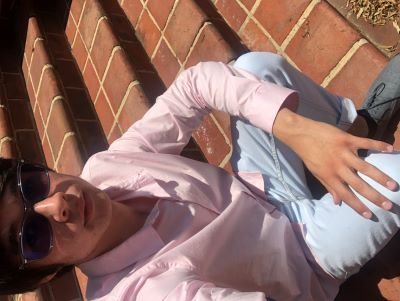

Wesley "Wiley Pterodactyl" Perry ITIS-3135 Introduction:

- Personal Background: I was born in Puerto Rico and grew up in North Carolina. I love stargazing and hiking. I became interested in computers early on as a way to bond with my grandfather who enjoyed computer games. Currently, I am a student studying Computer Science at the University of North Carolina at Charlotte. I am interested in pursuing a career in network security or pen testing.
- Professional Background: The most amazing job I had was at Brookdale Senior Living in Williamsburg Virginia. I worked there for a little over three years. My coworkers were awesome and the residents were like family! I've also helped people fix a printer here or there and built some computers.
- Academic Background: I attended PCC in Greenville NC for about two years; when I became serious about wanting to study Computer Science at a four year university. Then I ended up at the University of North Carolina at Charlotte! Why? Because our Computer Science program rocks of course!
- Background in this Subject: Working with software is relatively new to me. I am fairly fluent in Java, I know probably about as much Python as my Java programming experience translates. I've tried to teach myself HTML here and there, ironically using some of the same resources we'll be using in this class. Javascript will be completely new to me, and CSS I've used here and there, but I would consider myself new to it!
- Primary Computer Platform: Custom Built Mid-Sized Tower Running Windows 11 Home Edition
-
Courses I'm Taking & Why:
- ITIS-3135-Web App Design and Development: I should probably learn about websites and apps from scratch if I want to secure them!
- ITIS-3200-Intro to Security and Privacy: I'll get the Testout Security Pro certification that will look good on my resume!
- ITSC-2175-Logic and Algorithms: Because if all the other difficult math classes weren't enough, let's throw in a theoretical Computer Science based math course too (The program coordinator probably)!
- ITSC-3155-Software Engineering: Hopefully if I learn how to write software from the ground up I can create useful programs or security tools to help people!
- Funny/Interesting Item to Remember me by: If you wanna talk to me you should know I am very shy initially, but then I don't shut up. So converse with me at your own risk!
- I'd also like to Share: I love hiking and trying different foods. I especially love Mom & Pop type places or fancy restaurants that aren't a huge chain-local joints essentially! Nothing like burning a buncha' kilocals on the trail then feasting to your heart's content at some mountainside restaurant with a nice view!